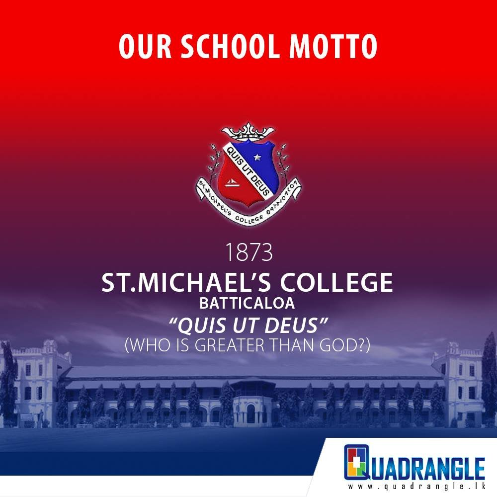

Reunions & events
Annual gatherings, dinners and informal meet-ups that bring Michaelites back together across the UK.
Welcome to the United Kingdom branch of the St. Michael’s College, Batticaloa Alumni Association — bringing Old Boys together across Britain through reunions, sport, networking and a shared sense of home.
Who we are
Founded in 1873, St. Michael’s College has shaped generations of Michaelites who now live and work all over the world. The UK branch keeps that bond alive for Old Boys settled across England, Scotland, Wales and Northern Ireland.
Whether you left last year or decades ago, you’ll find familiar faces, new friendships and plenty of reasons to stay connected to the college that made us.
Get in touch →
What we do
Annual gatherings, dinners and informal meet-ups that bring Michaelites back together across the UK.
The traditions continue in Britain — from the Big Match to the Festival of Cricket and friendly fixtures.
Professional connections, introductions and opportunities shared among fellow Old Boys.
Fundraising and support through the community that helps the college and its students thrive.
Reconnect
We’d love to welcome you. Register your details and we’ll keep you posted on the next gathering near you.
Become a member